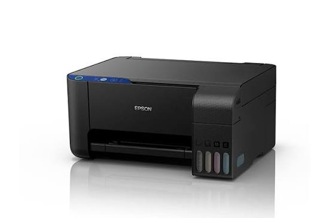

servis printer
Lampu tinta dan kertas pada printer Epson L3110
2026 M08 21

Lampu tinta dan kertas pada printer Epson L3110 yang berkedip bersamaan umumnya menandakan penampung limbah tinta penuh (Waste Ink Pad Full) atau terjadi kendala mekanik/kertas macet (paper jam).
Solusi utamanya adalah melakukan reset counter menggunakan software khusus atau memeriksa jalur kertas.
Cara Mengatasi dengan ResetterUnduh aplikasi Adjustment Program atau resetter khusus Epson L3110.Sambungkan printer ke komputer menggunakan kabel USB.
Buka aplikasi, lalu pilih menu Particular adjustment mode.
Cari dan pilih opsi Waste ink pad counter, lalu klik OK.Centang bagian Main pad counter, lalu klik Check dan lanjutkan dengan klik Initialization.
Matikan printer setelah proses selesai, lalu nyalakan kembali.
Pemeriksaan FisikPeriksa apakah ada kertas tersangkut, debu, atau benda asing di dalam bagian roller printer.
Pastikan komponen mekanik di dalam tidak terkunci atau terhalang kotoran.Nyalakan ulang printer (restart) setelah membersihkan area sekitar sensor kertas.
? Kembali ke halaman utama